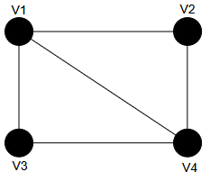
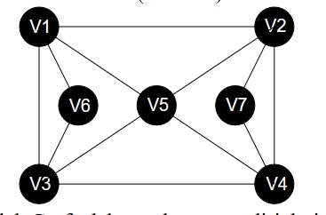
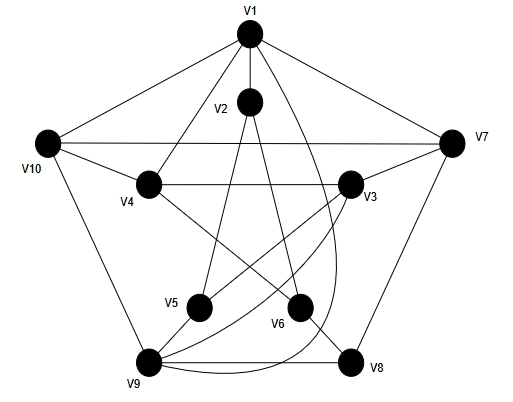

Matematika Diskrit
Kamis, 19-12-2024
2 Hari
3 SKS
Aidil Saputra Kirsan, S.ST., M.Tr.Kom
Diketahui
Hitunglah:
Misalkan \( P = \{2,3,4\} \) dan \( Q = \{2,4,8,9,15\} \). Jika kita definisikan relasi \( R \) dari \( P \) ke \( Q \) dengan \((p,q) \in R\) jika p habis membagi q.
Buatlah Diagram panah yang menunjukan:
Diberikan Fungsi \( w(t) = t - 1 \) dan \( q(t) = t^2 - 1 \).
Mahasiswa diminta mengerjakan 9 dari 10 soal ulangan, tetapi soal 1 - 5 harus dikerjakan. Banyaknya pilihan yang dapat diambil mahasiswa adalah........
Terdapat tiga sahabat (Tumini, Tukijo, Tukiem) duduk di bangku. Berapa urutan yang dapat terjadi?
6 orang siswa untuk perlombaan tenis meja ganda. Berapa banyak cara penyusunan pasangan pemain?
Perhatikan Graf X dibawah:
Tentukan Sirkuit Euler (Jika ada) dari Graf berikut!
Gambarlah Graf tak berarah yang terdiri dari 5 buah simpul dengan derajat masing-masing simpul:
Gunakan Algoritma Welch-Powell pada Graf W di bawah ini:
Buatlah pohon ekspresi dari \((q - w) * ((e/r) * (t + y))\)
Sebuah keluarga memiliki KK dengan seorang ayah, seorang ibu, dan empat orang anak (Joko, Juminten, Juki, Jaka, Jeki, Juke) dengan selisih umur tertentu. Tentukan kemungkinan urutan anak tertua hingga termuda menggunakan pohon keputusan (decision tree)!